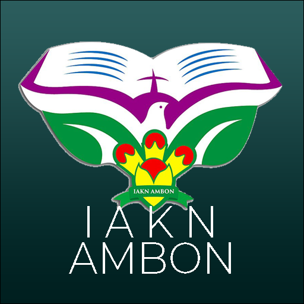
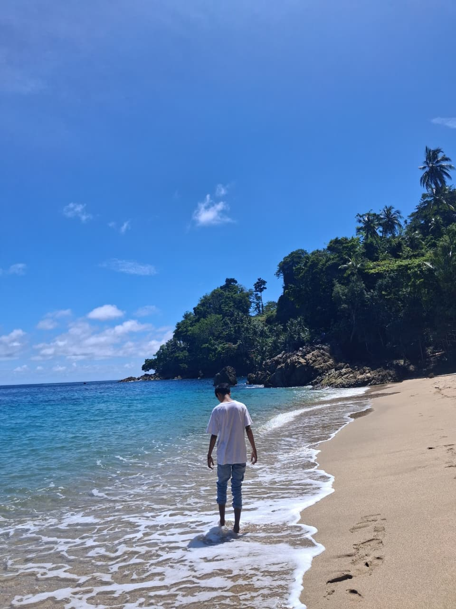
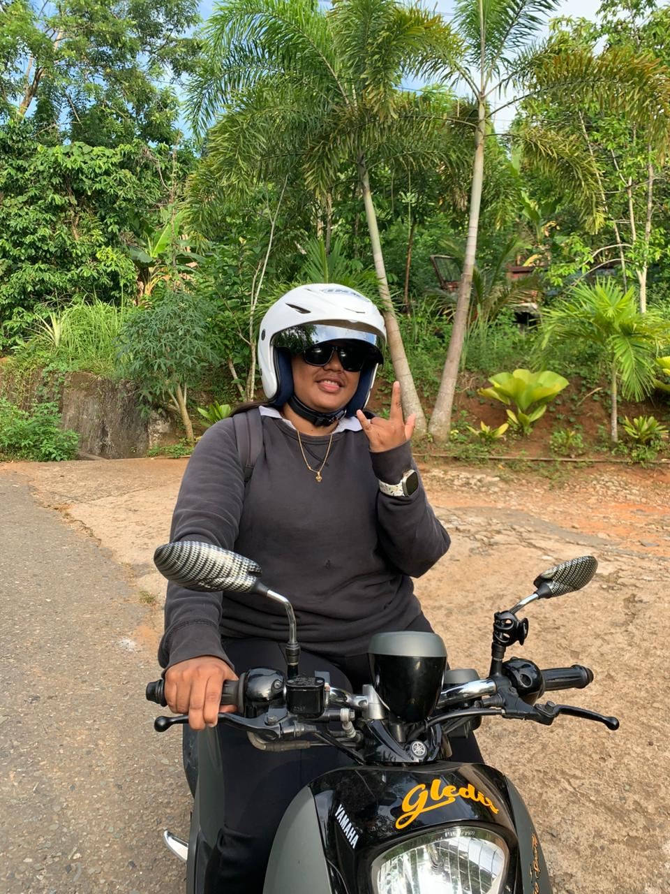
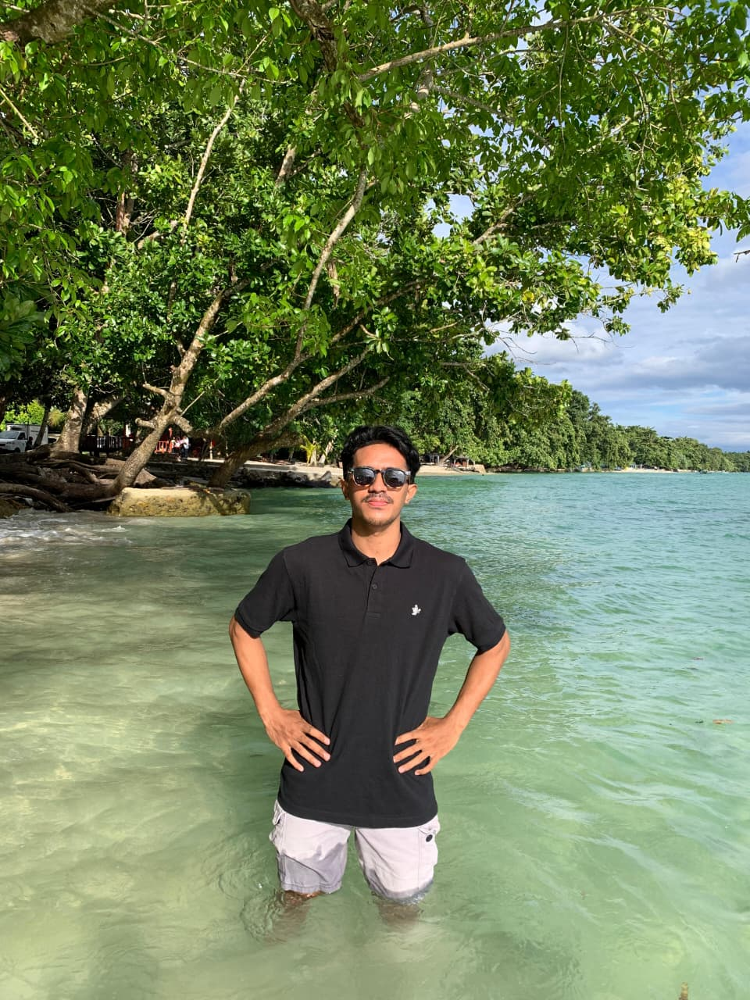
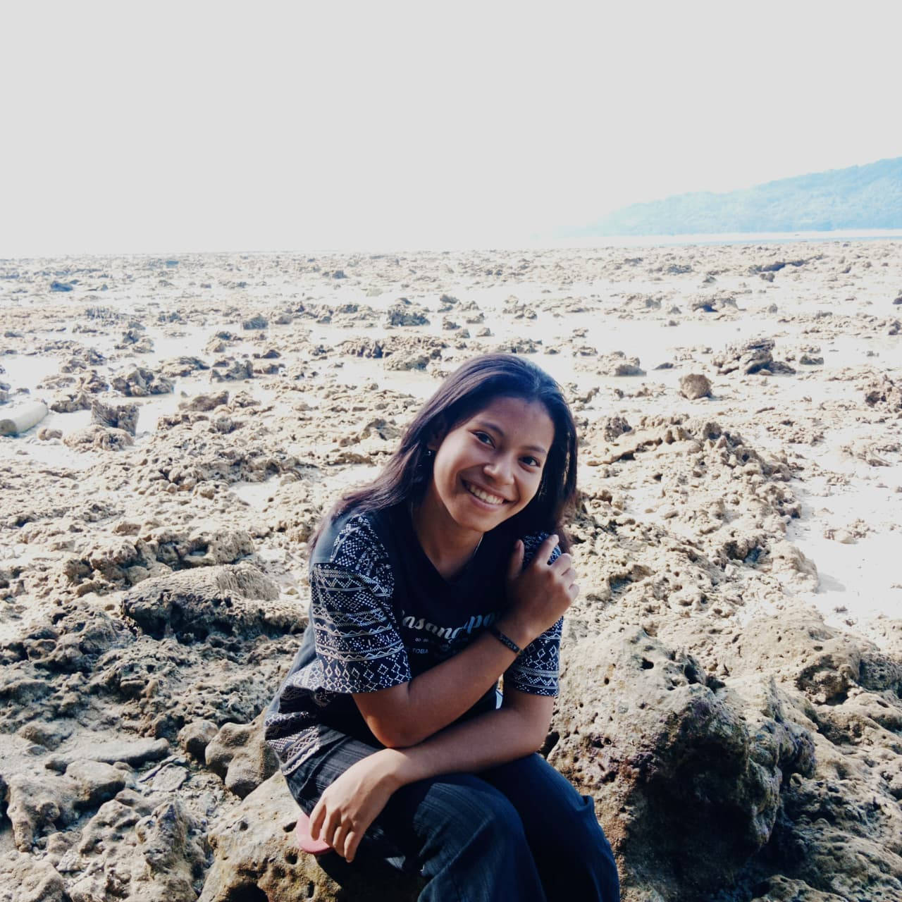
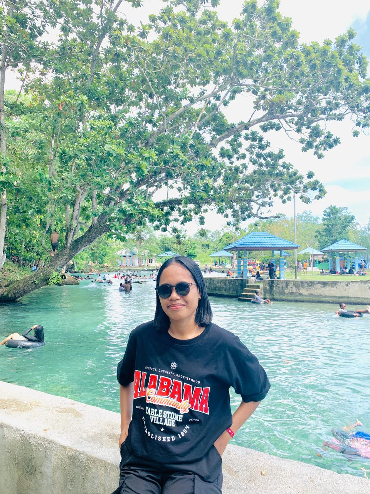

Kelompok 2 IAKN Ambon hadir dengan portofolio. Dari kampus di negeri Hallong, kami bawa semangat inovasi berbasis iman dan ilmu. Jelajahi karya kami dan rasakan kolaborasi terbaik dari Maluku!"


"Spesialis website modern yang mengikuti standar industri terkini. Menguasai React.js untuk frontend dinamis, Tailwind CSS untuk styling responsif, Node.js/Express untuk backend robust, dan MySQL/MongoDB untuk data management. Portofolio kami termasuk website corporate IAKN Ambon (2K+ visitors/bulan) dan e-commerce lokal dengan konversi 15%. Fokus pada speed, security, dan SEO ranking #1."
Nama : Nataniel picanussa
Kelas : B
Kampus : IAKN
Bidang : Web Developer

"Ahli menggali nilai dari data besar untuk pengambilan keputusan strategis. Mahir dalam Python (Pandas, NumPy), visualisasi Power BI/Tableau, dan SQL advanced querying. Pengalaman menganalisis 50K+ dataset penjualan Maluku, menghasilkan rekomendasi yang meningkatkan revenue 28%. Dari data cleaning hingga predictive analytics, kami berikan insight yang actionable dan visualisasi dashboard real-time."
Nama : Anastasya Banebunga
Kelas : B
Kampus : IAKN
Bidang : Data Analyst

"Spesialis website modern yang mengikuti standar industri terkini. Menguasai React.js untuk frontend dinamis, Tailwind CSS untuk styling responsif, Node.js/Express untuk backend robust, dan MySQL/MongoDB untuk data management. Portofolio kami termasuk website corporate IAKSN Ambon (2K+ visitors/bulan) dan e-commerce lokal dengan konversi 15%. Fokus pada speed, security, dan SEO ranking #1."
Nama : Versy tehusalawany
Kelas : B
Kampus : IAKN
Bidang : Web Developer

"Fokus pada Business Intelligence untuk transformasi data menjadi keunggulan kompetitif. Expert di Excel Advanced, Google Data Studio, dan ETL processes. Proyek unggulan: Dashboard monitoring siswa IAKN (accuracy 98%) dan analisis tren wisata Maluku (ROI +35%). Mengubah angka-angka menjadi cerita bisnis yang jelas dengan KPI tracking dan forecasting akurat."
Nama : Sherlyna Saukoly
Kelas : B
Kampus : IAKN
Bidang : Data Analyst (Business Intelligence)

"Pelopor analisis prediktif dengan sentuhan AI di Maluku. Menguasai Machine Learning basic (Scikit-learn), Neural Networks, dan Big Data processing. Pengalaman membangun model prediksi churn customer (accuracy 85%) dan sentiment analysis media sosial IAKN Ambon. Dari data preprocessing hingga model deployment, kami bawa masa depan analitik ke proyek Anda."
Nama : Grasella Dias
Kelas : B
Kampus : IAKN
Bidang : Data Analyst (Machine Learning)
Website e-commerce sederhana dengan fitur keranjang belanja dan halaman produk.
HTML CSS JavaScriptAplikasi sederhana untuk mencatat kegiatan harian dengan tampilan yang modern.
Html CssSistem manajemen data sekolah berbasis web dengan fitur CRUD lengkap.
PHP MySQL BootstrapJl.dolog,ambon
kelompok3@gmail.com
+62 821-9788-3767
@kelompok3_official